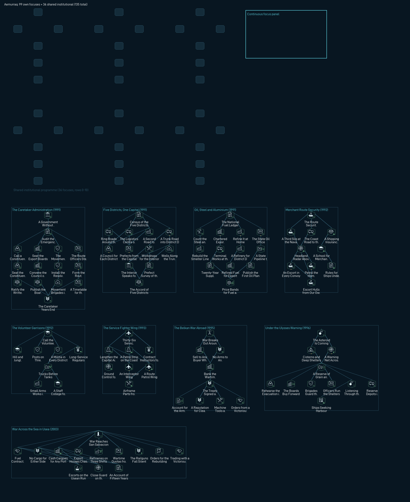
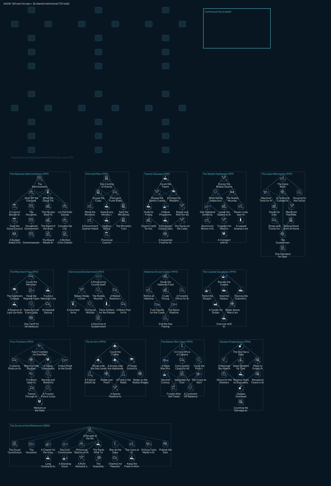
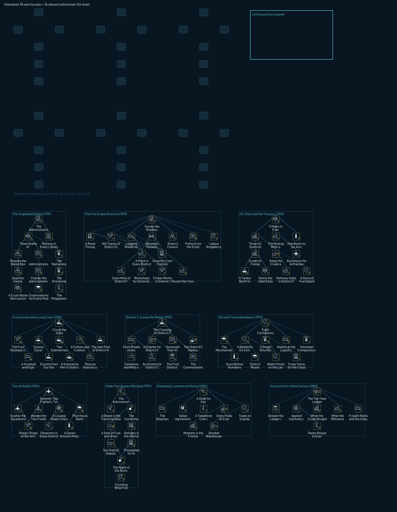
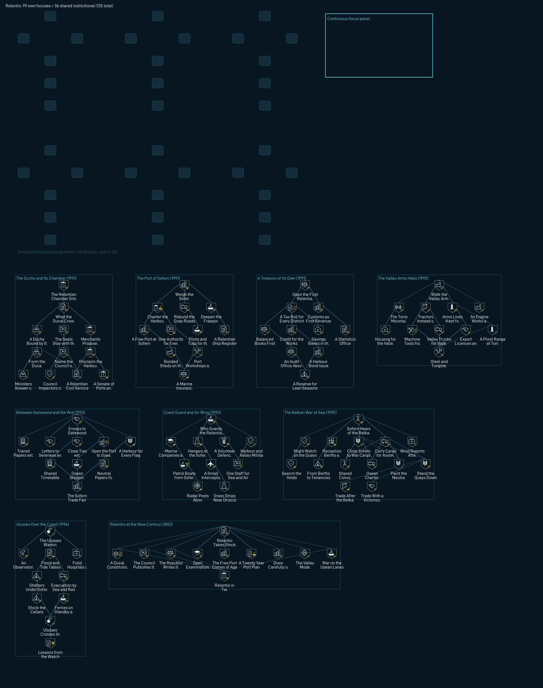
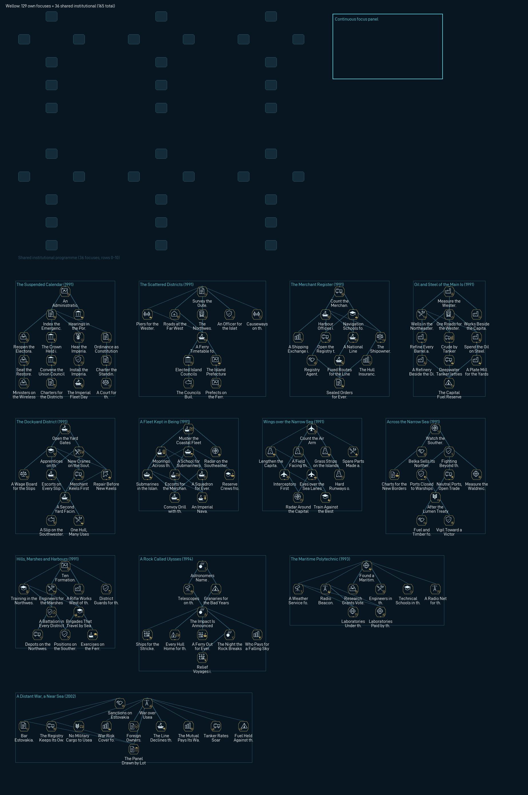

Offline evidence; not an engine screenshot. Native untested (#8).
99 own focuses, 9 branches, 36 shared institutional focuses, 10 events, 63 ideas, 4 offices.

| Branch | Era | Focuses | Filter |
|---|---|---|---|
| The Caretaker Administration | 1991 | 15 | FOCUS_FILTER_POLITICAL |
| Five Districts, One Capital | 1991 | 12 | FOCUS_FILTER_INTERNAL_AFFAIRS |
| Oil, Steel and Aluminium | 1991 | 13 | FOCUS_FILTER_INDUSTRY |
| Merchant Route Security | 1992 | 10 | FOCUS_FILTER_NAVY_XP |
| The Volunteer Garrisons | 1992 | 8 | FOCUS_FILTER_MANPOWER |
| The Service Fighter Wing | 1993 | 8 | FOCUS_FILTER_AIR_XP |
| The Belkan War Abroad | 1995 | 9 | FOCUS_FILTER_WAR_SUPPORT |
| Under the Ulysses Warning | 1996 | 11 | FOCUS_FILTER_STABILITY |
| War Across the Sea in Usea | 2003 | 13 | FOCUS_FILTER_WAR_SUPPORT |
Offices: Cabinet of the Constituent Assembly (democratic / centrism); Council of the Export Boards (neutrality / oligarchism); Directorate of National Resolve (fascism / ultranationalism); Route Security Command Council (neutrality / stratocracy)
The National Administration meets in the capital centre with an agenda its members have postponed for years. The emergency orders that suspended elections are due for renewal, and for the first time the ministry lawyers will not countersign them without a recorded cabinet vote. Aemurraq is governed by an office that sits under a democratic banner while the democratic camp itself barely registers in any count of public opinion.
Outside, the country has split almost exactly in two. Half answers to a nationalist movement that fills the squares and promises discipline, pride and an end to government by clerks. The other half belongs to a non-aligned establishment of export boards, senior officials and district notables who care more about stable prices than about any creed. Neither half trusts the Administration, and neither has yet found a lawful way to replace it.
The ministers cannot settle the country's future at one sitting. They can decide how the argument will be conducted: in public, with the press in the gallery and the movement's speakers given airtime on the state radio, or inside the ministries, where the export boards already keep their chairs. Whatever they choose will be read as a signal by both halves of the country, and by every foreign buyer of Aemurraqi oil.
Events: A Mandate Nobody Voted For; Five Districts Report; What the Wells Really Pump; A Tanker Overdue; Muster Day in Five Districts; Prices of a Distant War; The Asteroid Will Strike; Queues at the Grain Markets; The Night Ulysses Passed; War Comes to Usea
Sources: Mod provenance: Inherited 1991 state: ruling party democratic with elections_allowed = no (election_frequency 48); popularities neutrality 48, fascism 50, democratic 1, communism 1; stability and war support 0.5; three research slots and tech_mountaineers. The starting leader is the unnamed National Administration office (AEM_ac_government_office, centrism), whose description says its 1991 holder has not been established. The tree never names a holder.; Mod provenance: Geography: 1991 states 160, 433, 451 (capital), 468 and 502, captioned Aemurraq District A, District B, Capital District, District D and District E by the neutral regional labels (canonical regional mapping unestablished); victory points Aemurraq Capital Centre (3496) and Aemurraq Logistics Centre 1330. Terrain counts from map/definition.csv: desert in every district, hills and jungle in 433 and 468, plains in 468. State 468 has 27 provinces, no infrastructure, no buildings and no resources. Naval base and two dockyards in 160. Land neighbours AZB, EHE and SOA computed from map/provinces.bmp. No place outside these captions is named.; Provisional gameplay: World-start calibration the tree builds on: role merchant route security; 7 civilian, 5 military and 2 naval factories; 4 infantry formations (6 battalions); 36 fighters on one air base; 2 coastal escorts; 60 convoys; civilian economy, export focus and volunteer only laws; research priority Physical Sustainment (transport, equipment replacement, affordable service). Fictional fiscal calibration, not canon national accounts.; Official: Date anchor: the IAU announces that the asteroid Ulysses may strike the Earth. Used only as background to the Ulysses branch; no Aemurraqi role is claimed.; Official: Date anchor: the Belkan War breaks out. Used only as the opening of the distant-war branch; Aemurraq takes no part and no Aemurraqi role is claimed.; Official: Date anchor: a treaty is signed in Lumen and the Belkan War ends. Used as the date gate of the treaty focus.; Official: Date anchor: the FCU announces that Ulysses will impact the Earth. Used as the date gate of the Ulysses branch opening; where fragments fall is never stated.; Official: Former top pilots from the Belkan Air Force are hired by various countries and work as aggressor squadrons. Used as the date gate and premise of the contract instructors focus; no individual is named and no hire by Aemurraq is claimed as fact.; Official: Date anchor: Ulysses passes through the Roche limit of the Earth. Used as the date gate of the Roche night event; no damage in Aemurraq is claimed.; Official: Date anchor: Erusea stops taking in refugees. Used as the date gate of the harbour reception focus, framed as a pressure the government expects rather than a recorded arrival.; Official: Erusea invades the neutral country of San Salvacion, seizes Stonehenge and uses its railguns as anti-air batteries. Used as the opening of the Usean war branch.; Official: The FCU establishes the ISAF. Used as the date gate of the fuel contracts focus, which is trade only and changes no faction.; Official: Farbanti falls, the ISAF accepts the Erusean surrender and the Continental War ends. Background only; the outcome focuses read the mod outcome flags instead of assuming this ending.; Mod provenance: Campaign hooks read only, never set: belka_won_belkan_war and belka_lost_belkan_war (events/Belka.txt), ac_ucw_stonehenge_destroyed, ac_ucw_outcome_isaf_victory and ac_ucw_outcome_erusean_victory (common/scripted_effects/ac_ucw.txt). Each reaction is a leaf focus, so no outcome blocks the tree.; Provisional gameplay: All Aemurraqi focuses, ideas, offices, buildings, flags, decisions and events in this spec. No named people; offices are collective and unnamed; no border, core, war, annexation or faction effects; buildings only in the five 1991 states.
140 own focuses, 14 branches, 36 shared institutional focuses, 15 events, 75 ideas, 4 offices.

| Branch | Era | Focuses | Filter |
|---|---|---|---|
| The National Administration | 1991 | 15 | FOCUS_FILTER_POLITICAL |
| Port and Plain | 1991 | 10 | FOCUS_FILTER_INTERNAL_AFFAIRS |
| Twenty Slipways | 1991 | 10 | FOCUS_FILTER_INDUSTRY |
| The Nieblo Highlands | 1991 | 10 | FOCUS_FILTER_INDUSTRY |
| The Llano Metropolis | 1992 | 10 | FOCUS_FILTER_RESEARCH |
| The Merchant Flag | 1992 | 8 | FOCUS_FILTER_STABILITY |
| Service and Sustainment | 1992 | 9 | FOCUS_FILTER_MANPOWER |
| Halloma Oil and Timber | 1993 | 7 | FOCUS_FILTER_INDUSTRY |
| The Coastal Squadrons | 1993 | 7 | FOCUS_FILTER_NAVY_XP |
| Four Frontiers | 1993 | 10 | FOCUS_FILTER_POLITICAL |
| The Air Arm | 1994 | 9 | FOCUS_FILTER_AIR_XP |
| The Belkan War Years | 1995 | 9 | FOCUS_FILTER_WAR_SUPPORT |
| Ulysses Preparations | 1996 | 9 | FOCUS_FILTER_STABILITY |
| The Duchy at the Millennium | 2000 | 17 | FOCUS_FILTER_POLITICAL |
Offices: Ducal Council of Ministers (monarchism / constitutional_monarchy); Household Cabinet of the Duchy (monarchism / absolutism); Board of the Great Houses (neutrality / oligarchism); Executive Committee of the Civic Assembly (democratic / social_democracy)
The National Administration has governed Arklith since the vote of 1990, and it has done so competently enough that few people ask by what right. The ministries in Cabaria run, the yards launch their hulls and the Llano factories keep their shifts. Yet the Duchy has no election on its calendar, and the administration's own lawyers concede that its mandate rests more on habit than on any written grant.
Publishing the administration's powers has brought every faction into the open. Loyalists of the ducal house, still about a third of the country by the old measures, want the title to mean something again, either beside a council of ministers or above it. The owners of the yards, shipping lines and Nieblo mines want a board that runs the state the way they run their companies. A smaller but organised camp in the Llano and the port unions wants an elected assembly and nothing else.
Nothing has been decided yet. What the administration chooses today is how the argument will be held: openly, with the press and the provinces watching, or quietly in the corridors of Cabaria, where the great houses and the ducal household already have friends. Either choice will be remembered by the camp it disappoints.
Events: Who Governs the Duchy; Port and Plain; The Order Book; Under Whose Flag; The Highland Ledger; The Works Council Meets; The Army Counts Its Rifles; Four Frontiers; War Beyond Perbla; The Insurers Raise the Rates; A Date in the Sky; Ulysses Overhead; Ten Years On; A Buyer Walks Away; Freight for a Distant War
Sources: Mod provenance: Inherited Arklith state: ruling party neutrality with popularities neutrality 45, monarchism 35, democratic 15, communism 5; last election 1990.1.1 and elections_allowed = no; stability 0.81 and war support 0.07; three research slots; grand doctrines superior_firepower, fleet_in_being and operational_integrity; coastal escort and coastal submarine variants; 260 convoys; tech_mountaineers; starting office ARK_ac_government_office, localised National Administration; country names Duchy of Arklith (democratic and neutrality); research focus Physical Sustainment. The tree never removes or edits these.; Mod provenance: Geography: 1991 states 37 Halloma Basin, 140 Arklith del Sur, 222 Cabar Mountains, 241 Llano de Arklith (metropolis, seven industrial complexes, victory point Arklith), 252 Eastern Nieblo, 398 Cabaria (capital; Puerto Tranquilidad and Cabarion), 605 Arklith del Norte and 609 Nieblo Mountains; Marcil and Leonim in 140. Twenty dockyard levels split five each across 140, 222, 398 and 605; six of eight arms factories in 252 and 609; oil 31 in 37; aluminium and tungsten in 252 and 609; chromium in 222 and 398. Land neighbours PBL (via 37, 222, 252), LEA (via 241, 252, 609), DAK (via 252) and GIB (via 140, 241), computed from map/provinces.bmp. Heavy-rain weather from strategic region 122. Place names only from existing state and victory point localisation.; Mod provenance: Neighbour context only: Perbla tree names Arklith on its western frontier and Arklith traders asking for lower tariffs (PBL_wd_after_arklith_roads); Perbla holds historical_friends ties to Belka. Leasath 1991 popularities democratic ruling with fascism at 50; the Gibraltar Mining Zone is a neutrality administration. No Arklith role in any neighbour affair is claimed.; Official: Date anchor: the IAU warns that the asteroid Ulysses may strike the Earth.; Official: Date anchor: the Belkan War breaks out. No Arklith role is claimed.; Official: Date anchor: a treaty signed in Lumen ends the Belkan War.; Official: Date anchor: the FCU announces that Ulysses will impact the Earth.; Official: Date anchor: Ulysses passes through the Roche limit.; Official: Date anchor: the FCU establishes the ISAF; the Usean Continental War follows. No Arklith role.; Provisional gameplay: All Arklith focuses, ideas, offices, decisions, buildings, flags and events in this spec. No named people; offices are collective and unnamed; no border, core, war, annexation or faction effects; no new place names.
98 own focuses, 10 branches, 36 shared institutional focuses, 13 events, 49 ideas, 3 offices.

| Branch | Era | Focuses | Filter |
|---|---|---|---|
| The Suspended Ballot | 1991 | 12 | FOCUS_FILTER_POLITICAL |
| The Five Empty Districts | 1991 | 14 | FOCUS_FILTER_INTERNAL_AFFAIRS |
| Oil, Steel and the Treasury | 1992 | 11 | FOCUS_FILTER_INDUSTRY |
| Five Escorts and a Long Coast | 1992 | 10 | FOCUS_FILTER_NAVY_XP |
| District C Across the Water | 1993 | 9 | FOCUS_FILTER_STABILITY |
| Hill and Forest Battalions | 1993 | 10 | FOCUS_FILTER_ARMY_XP |
| Two Airfields | 1994 | 8 | FOCUS_FILTER_AIR_XP |
| Under the Ulysses Warning | 1995 | 9 | FOCUS_FILTER_STABILITY |
| Sfaenland, Luremia and Kaluga | 1996 | 8 | FOCUS_FILTER_POLITICAL |
| Accounts for a New Century | 2001 | 7 | FOCUS_FILTER_RESEARCH |
Offices: Elected Council of Ministers (democratic / centrism); Standing Administrative Board (neutrality / centrism_na); National Directorate (fascism / ultranationalism)
The National Administration that governs Glaceland in 1991 carries a democratic name and a suspended election calendar. Its officials run ten districts, eighteen plants, a small navy and a smaller air arm, and they do it competently enough that few people ask who appointed them. When the question is finally asked aloud, in the capital's press and in district halls from A to J, nobody in the Administration has a ready answer.
The pollsters' figures make the problem sharper. Barely one citizen in a hundred supports the party whose name the government carries. Close to half want the country run by non-party administrators, as it effectively already is. The other half answers to a nationalist movement that promises discipline, a stronger coast and an end to government by clerks. Democrats and communists together could fill a meeting hall, not a chamber.
The Administration must decide how the question will be argued before it can decide how it will be answered. District hearings would take a season and invite every grievance in the country into the record. A decision inside the Administration would be faster and quieter, and would confirm everything its critics say about it. Both choices will be remembered when the seals change hands.
Events: The Suspended Ballot; Returns from the Districts; Half a Country Without Roads; The Collection Gap; A Long Coast and Five Escorts; Across the Water; Hill Country and Eight Formations; Every Aircraft on Two Fields; Ulysses Will Strike; Ulysses Breaks Apart; Three Frontiers, Three Desks; A Commission Drawn by Lot; War in Usea
Sources: Mod provenance: Inherited Glaceland state: ruling_party democratic with elections_allowed = no; popularities neutrality 48, fascism 50, democratic 1, communism 1; stability and war support 0.5; three research slots; tech_mountaineers; grand doctrines superior_firepower, fleet_in_being and operational_integrity; starting office GLA_ac_government_office (National Administration), whose 1991 holder is not established. The tree reads these as political pressures and never edits them.; Mod provenance: World-foundation calibration, itself labelled provisional gameplay: 12 civilian plants, 6 arms works and 4 dockyards; 8 infantry formations; 72 fighters and 12 ground-attack aircraft on 2 airfields; 5 escorts and 2 submarines; 108 convoys; 4 supply centres; role dispersed coastal support; starting research priority Physical Sustainment. Fiscal profile GDP 200, debt ratio 0.3, collection 0.85, growth 3, inflation 2 is fictional gameplay calibration, not national accounts.; Mod provenance: Geography: 1991 states 9, 26, 35, 41, 50 (capital), 52, 87, 129, 172 and 576, labelled District A, B, C, D, Capital District, F, G, H, I and J. All industry sits in 50, 26, 87 and 172, the dockyards in 9; states 35, 41, 52, 129 and 576 have no infrastructure or industry. State 35 is detached from the mainland and province 9991 (state 129) is an outlying naval post. Land neighbours SFA (via 9 and 52), LUR (52, 576) and KLG (576), computed from map/provinces.bmp. Terrain counts from map/definition.csv. No new place names.; Official: Date anchor only: the International Astronomical Union announces that Ulysses may strike the Earth. No Glacelandic role is claimed.; Official: Date anchor only: the impact of Ulysses is announced worldwide. Glacelandic preparations are gameplay.; Official: Date anchor only: Ulysses passes through the Roche limit. What falls near Glaceland is not claimed.; Official: Ulysses broke into fragments as it passed into the atmosphere; used only to say the asteroid broke apart. No Stonehenge content and no impact site is used.; Official: Date anchor only: the ISAF is established against Erusea. The focus that reacts to it waits for the mod flag ac_ucw_isaf_formed and claims no Glacelandic part in the war.; Provisional gameplay: All Glacelandic focuses, ideas, offices, buildings, flags, decisions and events in this spec. No named people; offices are collective and unnamed; no border, core, war, annexation or faction effects.
143 own focuses, 13 branches, 36 shared institutional focuses, 13 events, 58 ideas, 4 offices.

| Branch | Era | Focuses | Filter |
|---|---|---|---|
| The Crown Question | 1991 | 14 | FOCUS_FILTER_POLITICAL |
| The Four Crown Lands | 1991 | 11 | FOCUS_FILTER_INTERNAL_AFFAIRS |
| The Heavy Industry Reckoning | 1991 | 13 | FOCUS_FILTER_INDUSTRY |
| The Year of Service | 1991 | 11 | FOCUS_FILTER_MANPOWER |
| Gatewood Electronics | 1992 | 10 | FOCUS_FILTER_RESEARCH |
| The Belkan War Next Door | 1995 | 12 | FOCUS_FILTER_WAR_SUPPORT |
| The Serenava Air Arm | 1993 | 9 | FOCUS_FILTER_AIR_XP |
| Sofern and the Coast | 1993 | 9 | FOCUS_FILTER_NAVY_XP |
| After the War Years | 1996 | 11 | FOCUS_FILTER_STABILITY |
| Terentio Oil and Ore | 2000 | 10 | FOCUS_FILTER_INDUSTRY |
| The Kingdom at the Millennium | 2003 | 14 | FOCUS_FILTER_POLITICAL |
| A Neighbour at War | 2010 | 9 | FOCUS_FILTER_WAR_SUPPORT |
| The Network Years | 2016 | 10 | FOCUS_FILTER_RESEARCH |
Offices: Crown Ministry of the Chamber (monarchism / constitutional_monarchy); Privy Council of the Crown Lands (monarchism / absolutism); Crown Directorate of Order (monarchism / perblan_totalitarianism); Assembly Government of the Four Lands (democratic / social_democracy)
The session opens in the old throne hall at Gatewood with the usual music and an unusual agenda. For the first time in living memory the clerks have placed the government itself on the order paper. Perbla is a kingdom of four crown lands held together by one throne, a century-old service year and an economy that leans on its arms plants. Each of those pillars now has a faction that wants it rebuilt.
The constitutional camp wants ministers who answer to an elected chamber. The palace party wants the seals returned to a privy council that can act without waiting for votes. A harder faction speaks of order above all, of a crown that governs by decree because elected governments always drift back to greed. Deputies from the outer lands ask whether the crown needs to govern at all, or only to reign.
None of these camps commands a majority today. What the court decides in this first session is not which answer wins, but how the question will be argued: in the open, with the chamber and the press watching, or behind the palace doors. Either way, the arms trusts, the officer corps and the four lands are already counting their friends.
Events: The Crown Question; Four Lands, One Throne; The Unfinished Plants; One Firm, One Kingdom; The Service Year Debate; War Beyond the Frontier; The Old Alliance Debated; Ulysses in the Night Sky; Oil Under Terentio; Ten Years On; The Monday Morning Exercise; A Neighbour at War; Drones Over the Harbours
Sources: Mod provenance: Inherited Perbla state: monarchism ruling at 70 percent popularity with a constitutional_monarchy leader; ideas PBL_mandatory_service, PBL_eco_crisis_1, PBL_south_belka_munitions, PBL_federal_kingdom and PBL_electronics. The tree builds on these ideas and never removes or edits them.; Mod provenance: The inherited intervention path: perbla_intervention.1 to .3, fired by a Belkan decision only when PBL holds pbl_help_belka_flag (a 1 percent roll at game start), plus the historical_friends (BLK) and historical_enemies (OSE) opinion modifiers. The 1995 branch debates the old alliance but commits no forces and never sets that flag.; Mod provenance: perblan_totalitarianism is an archive monarchism sub-ideology (can_be_randomly_selected = no); used only for the unnamed Crown Directorate of Order office.; Mod provenance: Geography: 1991 states 112, 173, 207, 209, 236, 389 (capital), 571, 581, 592, 597 and 601; crown-land cores REL (173, 207, 236, 597), TER (209, 571) and SER (581); DAK claims on 209 and 571; land neighbours OSE (via 581), DAK and ARK, computed from map/provinces.bmp. Place names come from existing state and victory point localisation.; Official: Date anchors for regional pressure only: the Belkan War breaks out (1995 / 03.25); the Ulysses warnings (1994 / 12.10 and 1996 / 04.20); the Circum-Pacific War begins (2010 / 09.27); drone strikes on four Osean naval ports as the Lighthouse War begins (2019 / 05.15); satellites destroyed and Usean network communications cut (2019 / 09.19). No Perblan role in any of them is claimed.; Provisional gameplay: All Perblan focuses, ideas, offices, buildings, flags and events in this spec. No named people; offices are collective and unnamed; no border, core, war, annexation or faction effects.
99 own focuses, 9 branches, 36 shared institutional focuses, 11 events, 48 ideas, 3 offices.

| Branch | Era | Focuses | Filter |
|---|---|---|---|
| The Duchy and Its Chamber | 1991 | 12 | FOCUS_FILTER_POLITICAL |
| The Port of Sofern | 1991 | 11 | FOCUS_FILTER_INDUSTRY |
| A Treasury of Its Own | 1991 | 10 | FOCUS_FILTER_STABILITY |
| The Valley Arms Halls | 1992 | 11 | FOCUS_FILTER_INDUSTRY |
| Between Gatewood and the Wider World | 1992 | 10 | FOCUS_FILTER_POLITICAL |
| Coast Guard and Air Wing | 1993 | 10 | FOCUS_FILTER_NAVY_XP |
| The Belkan War at Sea | 1995 | 14 | FOCUS_FILTER_WAR_SUPPORT |
| Ulysses Over the Coast | 1996 | 10 | FOCUS_FILTER_STABILITY |
| Relentio at the New Century | 2002 | 11 | FOCUS_FILTER_POLITICAL |
Offices: Ducal Ministry of the Chamber (monarchism / constitutional_monarchy); Council of the Ducal Seals (monarchism / absolutism); Executive Council of the Harbour Republic (democratic / liberalism)
The chamber meets for its first full session in a hall borrowed from the Sofern harbour councils, because no building in Relentio was designed to hold a national parliament. The ducal office sends its clerk with a short message: the seals are kept, the coast guard is paid and a budget will follow. Everything else, the message says, is for the chamber to argue.
And argue it does. Shipowners from Sofern want a government that moves as quickly as a freight market. Deputies from the Relentio valley around Driscol want protection for the arms halls and the wages they pay. The Torre Mountain districts, smallest of all, want a guarantee that the coast will not outvote them on every question. A few voices ask whether a ducal crown suits a state of merchants at all.
No camp holds a majority today. What the session can decide is how the question will be argued: openly, with the press gallery full and every speech printed, or quietly, in committee rooms where bargains are easier to strike and harder to explain. Either way, the shipping lines, the valley unions and the officer corps are already counting their friends.
Events: Who Governs Relentio; The Sofern Customs Count; The First Relentian Budget; Silence in the Valley Halls; Envoys at Gatewood; War on the Shipping Lanes; The Held Freighter; A Coast Under Ulysses; The Watch Night; An Account of the State; A Trade Mission Returns
Sources: Mod provenance: Inherited Relentio history: monarchism ruling at 70 percent popularity, elections not allowed, no starting ideas, and the REL_ac_government_office character (Office of the Crown, constitutional_monarchy, no named holder). The country is the Duchy of Relentio under monarchism and the Republic of Relentio under every other ideology.; Mod provenance: Release-country scope: REL owns no state in 1991; its cores are 173, 207, 236 and 597 (all owned by PBL) and its history capital is 581. tools/release_foundations owns when and how Relentio exists; this tree assumes neither, and its builds target only the four cores under owns_state guards.; Mod provenance: Geography and place names from existing localisation only: Faroe (173, victory point Driscol), Torre Mountain (207), Sofern (236, victory point Sofern), North Relentio (597, victory point Fraeport). Resources and buildings from the state histories. Neighbouring names (Perbla, Gatewood, Serenava, Terentio) come from the Perbla spec and localisation.; Mod provenance: Consistency with the approved Perbla tree: Relentio as the crown land of the Sofern docks and its harbour councils, the arms halls of the Relentio valley, and Torre Mountain inland. Nothing here narrates which Perblan focuses were taken before Relentio governs itself.; Mod provenance: Campaign hooks read only outcomes the mod already records: belka_lost_belkan_war and belka_won_belkan_war, set by the Belkan War events, and belka_dropped_nukes. Each is a separate gameplay branch; none is asserted as history.; Official: Date anchor only: the Ulysses close-approach warning.; Official: Date anchor only: the Belkan War breaks out.; Official: Date anchor only: Belkan nuclear devices in the Waldreich Mountains.; Official: Date anchor only: the treaty signed in Lumen ends the Belkan War.; Official: Date anchor only: the announcement that Ulysses will strike the Earth.; Official: Date anchor only: Ulysses passes through the Roche limit.; Official: Date anchor only: the FCU demand to Erusea and the founding of the ISAF in Usea.; Provisional gameplay: All Relentian focuses, ideas, offices, decisions, buildings, flags and events in this spec. No named people; offices are collective and unnamed; no border, core, war, annexation or faction effects; no new place names.
129 own focuses, 12 branches, 36 shared institutional focuses, 16 events, 68 ideas, 4 offices.

| Branch | Era | Focuses | Filter |
|---|---|---|---|
| The Suspended Calendar | 1991 | 15 | FOCUS_FILTER_POLITICAL |
| The Scattered Districts | 1991 | 11 | FOCUS_FILTER_INTERNAL_AFFAIRS |
| The Merchant Register | 1991 | 11 | FOCUS_FILTER_INDUSTRY |
| Oil and Steel of the Main Island | 1991 | 11 | FOCUS_FILTER_INDUSTRY |
| The Dockyard District | 1991 | 10 | FOCUS_FILTER_NAVY_XP |
| A Fleet Kept in Being | 1991 | 10 | FOCUS_FILTER_NAVY_XP |
| Wings over the Narrow Sea | 1991 | 10 | FOCUS_FILTER_AIR_XP |
| Across the Narrow Sea | 1991 | 10 | FOCUS_FILTER_WAR_SUPPORT |
| Hills, Marshes and Harbours | 1991 | 10 | FOCUS_FILTER_ARMY_XP |
| A Rock Called Ulysses | 1994 | 10 | FOCUS_FILTER_STABILITY |
| The Maritime Polytechnic | 1993 | 9 | FOCUS_FILTER_RESEARCH |
| A Distant War, a Near Sea | 2002 | 12 | FOCUS_FILTER_WAR_SUPPORT |
Offices: Cabinet of the Restored Chamber (democratic / liberalism); Union Council of the Districts (neutrality / conservatism_na); Imperial Directorate (fascism / ultranationalism); Standing Administration of the Republic (democratic / centrism)
The National Administration begins 1991 the way it ended the previous year: governing by ordinance from offices on the capital plain, with no date set for the next election. Its own party, the one that still calls the country a republic, polls almost nobody. The ferries run, the ports collect their dues and the fleet keeps its moorings, but nobody can say on whose mandate any of it happens.
Two great movements fill the space the administration leaves empty. The imperial movement, which wants a Wellowan Empire with one flag and one fleet, claims about half the electorate and fills the port-town halls with petitioners. The union camp, which wants the scattered districts bound together as a United Kingdom under a crown held by their own council, claims nearly all the rest. Both say the administration is a caretaker that has forgotten it was meant to leave.
Senior officials have prepared a statement for the new year. It can promise that the question of government will be settled in public, with hearings in every district and a published record, or it can promise only continuity and ask the country to wait. Neither promise costs anything today. Both will be quoted against the administration for years.
Events: An Administration Without a Calendar; The Ferry Season Report; Nine Hundred Hulls; The Ghost Hulls; The Western Fields; Six Slips, Three Masters; Belka Sells Its North; War Across the Narrow Sea; The First Month of the Watch; Light over the Southern Mountains; One Army, Sixteen Districts; A Rock with a Name; Instructors for Hire; A Relief Convoy Sails; Insurers Price a Distant War; Fifteen Years of the Register
Sources: Mod provenance: Inherited Wellow history: capital state 247; ruling_party democratic with elections_allowed = no; popularities neutrality 48, fascism 50, democratic 1, communism 1; stability and war support 0.5; leader is the unnamed WEL_ac_government_office (National Administration), whose 1991 holder is not established. The tree reads these numbers as political pressure and does not claim when or why the election calendar stopped.; Mod provenance: Country names per party: Republic of Wellow (democratic), Wellowan Empire (fascism), United Kingdom of Wellow (neutrality and monarchism), Union of Wellow (communism); adjective Wellowan. The four political answers follow these names; offices are collective and unnamed.; Mod provenance: Geography: 1991 states 5, 17, 96, 100, 131, 175, 244, 245, 246, 247 (capital), 248, 250, 253, 255, 264 and 266 on the wellow continent. States 5 and 244 to 266 form one contiguous main island; 17, 96, 100 and 131 are separate island districts to the west and 175 a small islet to the southeast. No land neighbours; the nearest foreign coast is Belka to the south, then FATO and Gebet, computed from map/provinces.bmp. The capital state is the only inland state. Terrain (hills, marsh, mountain, plains) comes from map/definition.csv. District labels are provisional and are not used as place names.; Mod provenance: Starting economy and forces: 16 civilian, 8 military and 6 dockyard levels (the six dockyards all in state 253); air bases in states 5 and 247; a fuel silo in the capital; oil 44 and steel 38 from states 5, 247 and 250; 932 convoys; about ten infantry formations, a coastal escort and submarine navy, a small fighter and support air arm; grand doctrines superior_firepower, fleet_in_being and operational_integrity; role dispersed maritime trade. These are gameplay calibration, not canon national accounts.; Official: Date anchor: Belka sells northern territory to FATO and cedes northern islands and the Great Lakes region to Osea. Used for the strait branch opening; no Wellowan role is claimed.; Official: Date anchor: Belkan borders are redrawn. Used only as the earliest date of a study focus.; Official: Date anchor: the IAU announces that Ulysses may strike the Earth. Wellowan preparations are gameplay.; Official: Date anchor: the Belkan War breaks out. Wellow is not a party; its posture is gameplay.; Official: Date anchor: the Belkan Army uses nuclear devices in the Waldreich Mountains. The Wellowan fallout watch is gameplay and also requires the mod global flag belka_dropped_nukes.; Official: Date anchor: the treaty signed in Lumen ends the Belkan War.; Official: Date anchor: the FCU announces that Ulysses will strike the Earth.; Official: Date anchor: former top Belkan Air Force pilots are hired by various countries as aggressor squadrons. The Wellowan offer is gameplay; Wellow is not claimed to be one of those countries.; Official: Date anchor: Ulysses passes through the Roche limit.; Official: Date anchor: Osea, Emmeria and other nations join sanctions against Estovakia. Wellow is not claimed among them; the registry choice is gameplay.; Official: Date anchor: the FCU demands that Erusea withdraw from the railgun complex and San Salvacion, and the ISAF is established.; Official: Date anchor: Farbanti falls and the Continental War ends; used for the closing review.; Provisional gameplay: All Wellowan focuses, ideas, offices, decisions, buildings, flags and events in this spec. No named people; offices are collective and unnamed; no border, core, war, annexation or faction effects. Campaign hooks read only mod global flags (belka_dropped_nukes, belka_lost_belkan_war, belka_won_belkan_war).